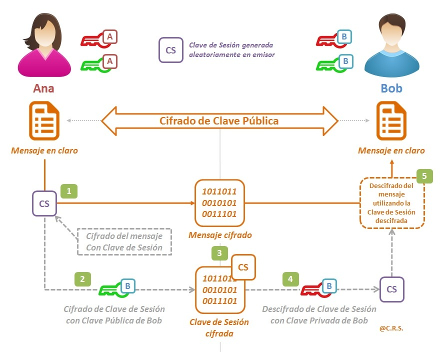
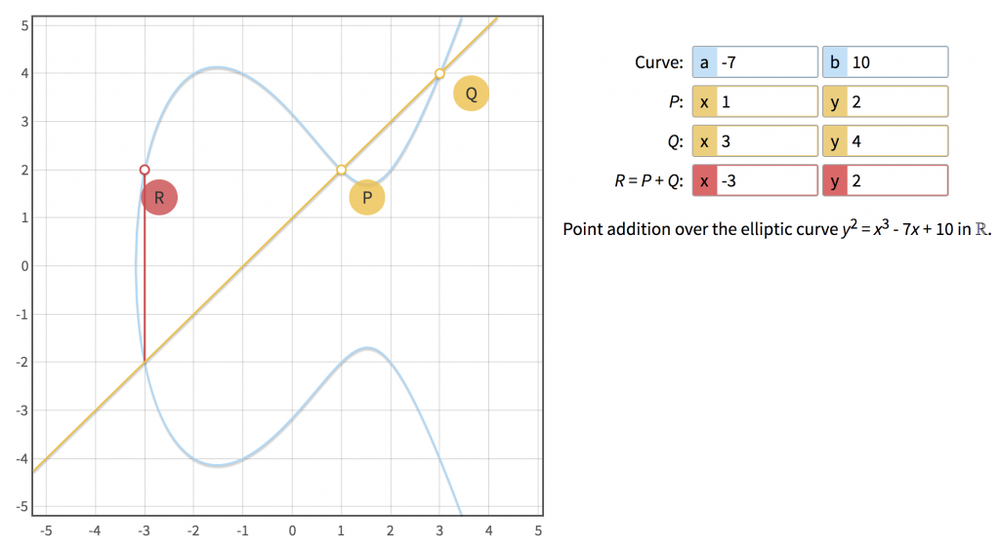
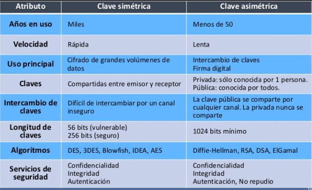

Criptografía de Clave Pública: La Revolución del Cifrado
La criptografía de clave pública (también llamada criptografía asimétrica) utiliza un par de claves:
una pública para cifrar y una privada para descifrar. A diferencia de la
criptografía simétrica, no es necesario compartir una clave secreta con el receptor; la clave pública se
distribuye libremente mientras la privada permanece protegida por su propietario.
Su invención resolvió el problema del intercambio seguro de claves y permitió la creación de firmas digitales,
autenticación y protocolos como TLS/SSL que aseguran la web moderna.

Para profundizar visualmente, este vídeo explica la idea con ejemplos sencillos.
Autor: Roger RodriguezPublicado: 06/12/2025 – 09:43👁 Lecturas: 0
000
Cómo Funciona: RSA, ECC y Algoritmos Representativos
🔍 Funcionamiento básico:
1. El receptor genera un par de claves: pública y privada.
2. Publica su clave pública en un servidor o directorio.
3. Cualquier emisor cifra el mensaje usando esa clave pública.
4. Solo el receptor puede descifrar el mensaje con su clave privada.
Entre los algoritmos más usados están:
RSA: Basado en la factorización de enteros. Genera claves (n, e, d) donde la seguridad
depende de la dificultad de factorizar n (producto de dos primos grandes).
ECC: Basado en curvas elípticas. Ofrece seguridad equivalente a RSA con claves mucho más
pequeñas (ej. P-256 equivale aproximadamente a RSA-3072).
ElGamal y Diffie–Hellman: Usados para intercambio de claves y cifrado
probabilístico.

El flujo general implica: generación de par de claves → publicación de la clave pública →
cifrado con la
pública → descifrado con la privada. Para firmas, el emisor firma con su privada y cualquier receptor
verifica con la pública.
Aquí tienes una explicación técnica detallada sobre el funcionamiento de este proceso criptográfico y sus
implicaciones en la seguridad del sistema.
Autor: Roger RodriguezPublicado: 06/12/2025 – 10:43👁 Lecturas: 0
000
Ventajas, Desventajas y Diferencias con Criptosistemas Simétricos

Ventajas:
Evita intercambio secreto de claves.
Permite firmas digitales y no repudio.
Escala mejor para sistemas con muchos participantes (no requiere O(n²) claves compartidas).
Desventajas:
Operaciones más costosas: cifrado/descifrado más lento que AES, por ejemplo.
Dependencia de parámetros seguros; mala implementación puede comprometer seguridad.
Diferencias clave con sistemas simétricos: En simétrico la misma clave cifra y descifra; en
asimétrico hay par de claves. En la práctica, ambos se combinan: asimétrico para intercambio de claves,
simétrico (AES) para cifrado de datos por su eficiencia.
Para profundizar visualmente, este vídeo explica la idea con ejemplos sencillos.
Autor: Roger RodriguezPublicado: 06/12/2025 – 11:43👁 Lecturas: 0
000
Caso Práctico: RSA + AES en Transacciones Web
Un uso típico es HTTPS. Cuando el navegador se conecta a un servidor seguro, el servidor presenta un certificado
(que contiene su clave pública). El navegador verifica el certificado y usa la clave pública para establecer
un canal seguro (intercambio de claves). Después, el tráfico real se cifra con un algoritmo simétrico como AES
por eficiencia.
¿Dónde usarlo? En cualquier sistema que requiera confidencialidad y autenticidad: banca en
línea,
mensajería segura, firma de código y sistemas de identidad.
Cómo implementarlo: Use librerías maduradas (OpenSSL, libsodium, WebCrypto API). Evite escribir
su propia criptografía desde cero.
Autor: Roger RodriguezPublicado: 06/12/2025 – 12:43👁 Lecturas: 0
000
Observaciones y Recomendaciones para Implementación
Seleccionar tamaños de clave actuales: RSA ≥ 2048 bits (ideal 3072+), curvas ECC recomendadas: P-256, P-384
o curvas certificadas según el estándar.
Mantener bibliotecas actualizadas, usar módulos de hardware (HSM o Secure Enclave) cuando sea necesario y
proteger la clave privada con controles de acceso y cifrado en reposo.
Evitar algoritmos obsoletos (p. ej. RSA con PKCS#1 v1.5 sin OAEP, o curvas no recomendadas). Realizar
pruebas de auditoría y revisión por pares.
Para compatibilidad y rendimiento, combine asimétrico para establecimiento de sesión y simétrico para
cifrado de datos en bloque.
Autor: Roger RodriguezPublicado: 06/12/2025 – 13:43👁 Lecturas: 0